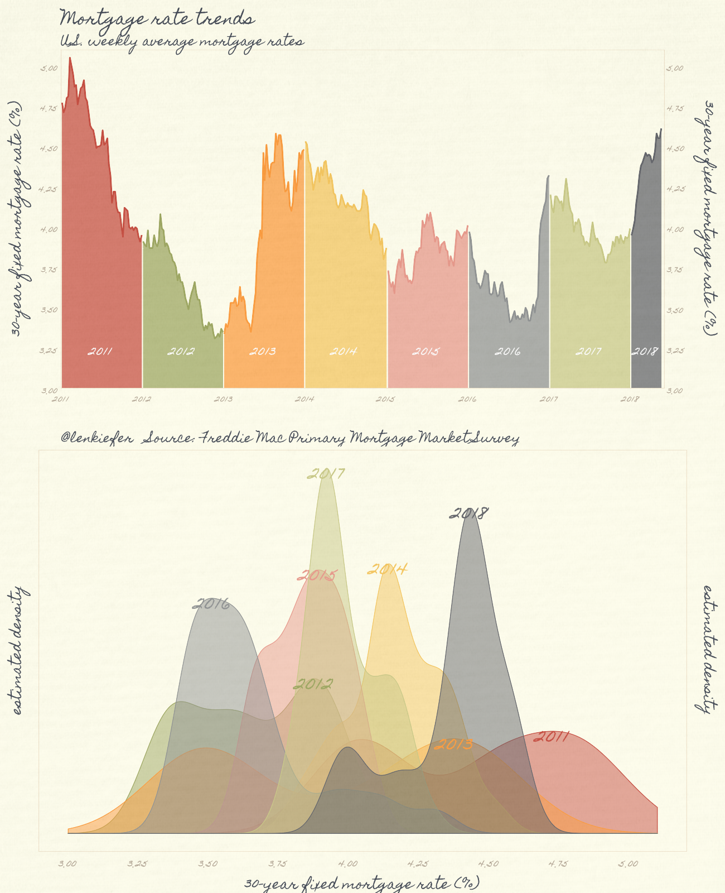
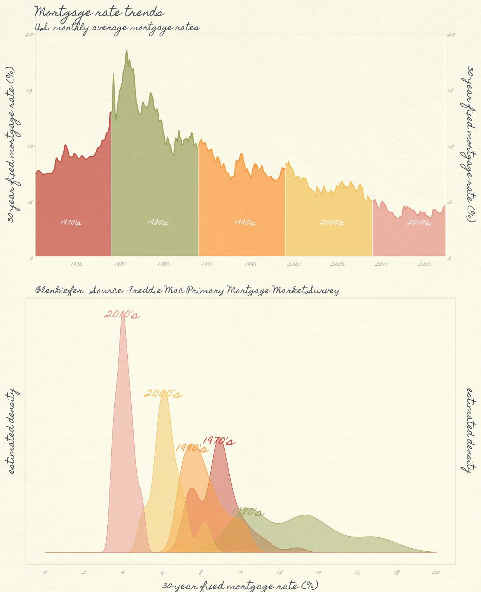
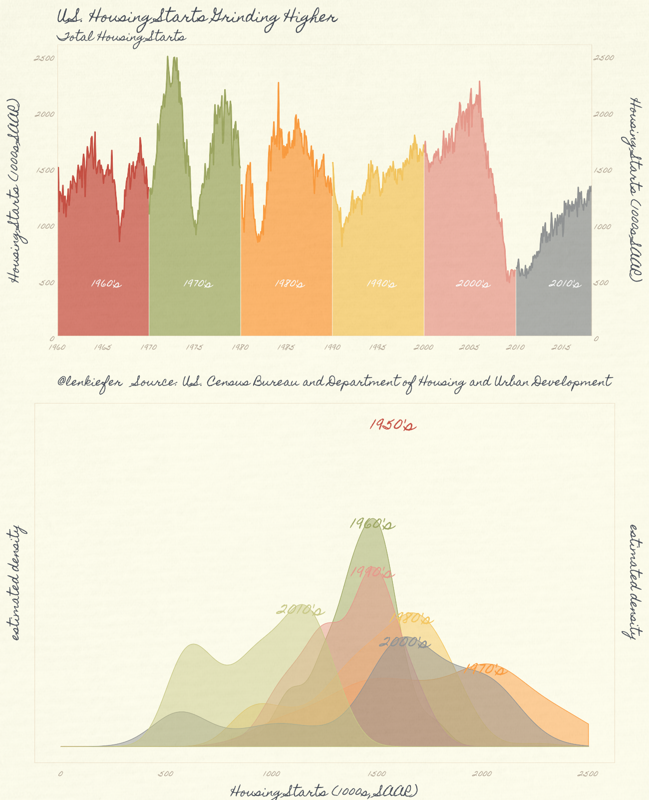

In the real world, when I give talks and use slides I am typically constrained in my aesthetic. Often I’m speaking at a work-related thing and we have a corporate template and color scheme. They serve us well and I’ve found restraint helps focus on the message. Usually I’m setting out to inform, so direct, repeatable and easy to follow are key.
But I also like to explore new ideas and different themes on the side. See for example my Twitter feed or this blog. One recent theme I’ve used that has generated a lot of engagement is the pomological theme ggpomological from Garrick Aden-Buie, inspired by the USDA Pomological Watercolors collection. (The orginal link Garrick referenced doesn’t seem to work). There is however, a Twitter handle [at]pomological that posts old fruit pictures.
In this post we’ll use the theme and make a few new plots.
Per usual, let’s make a graph with R.
Get the theme
The ggpomological theme is not yet available on CRAN, so you’ll have to download via github:
devtools::install_github("gadenbuie/ggpomological")
If you want the fancy theme options, you’ll also need to download the Homemade Apple font as described in the ggpomological page. Once you have the font installed we’re ready to go.
Get data
We’ll start out by recreating two plots I recently shared on twitter.
This one of housing starts
U.S. #housing starts have been grinding higher over most of this decade, but remain very low relative to historical averages pic.twitter.com/wOHX7sfBm1
— 📈 Len Kiefer 📊 (@lenkiefer) May 16, 2018
And this one of mortgage rates
#dataviz pic.twitter.com/MrcZFSGbSm
— 📈 Len Kiefer 📊 (@lenkiefer) May 18, 2018
We can easily get the data via the Saint Louis Federal Reserve’s FRED database. If you followed my post from back in April of last year you know what we can do if we combine FRED with the quantmod package. It gets even easier if we use tidyquant like we did here.
The following code grabs the two series we need from FRED and gets them ready for plotting. We’ll eventually want to color the plots by decade, so we’ll create a decade variable.
First load required libraries.
library(tidyquant)
library(ggpomological)
library(extrafont) # for the special fonts
library(cowplot)Then get the data.
df<- tq_get(c("MORTGAGE30US","HOUST"),get="economic.data",from="1959-01-01")
df$year<-year(df$date)
df <- mutate(df, decade=paste0(10*floor(year/10),"'s"))
df <- df %>% group_by(year,symbol) %>% mutate(week=row_number()) %>% ungroup() %>%
group_by(decade) %>% mutate(weekd=row_number()) %>% ungroup() %>%
mutate(yearf=factor(year))
df.mtg <- filter(df, symbol=="MORTGAGE30US")
df.starts <- filter(df, symbol=="HOUST")
df <- df.mtgIn both tweets I combined a shaded area plot and a density plot. First, let’s make the shaded area plot without our fancy theme. It’s pretty straightforward with ggplot2.
g.line.plain <-
ggplot(data= filter(df, year>2010),
aes(x=date,y=price, fill=yearf,color=yearf))+
geom_ribbon(alpha=0.35,color=NA, aes(ymin=3,ymax=price))+
geom_line()+
theme(legend.position="none")+
geom_text( data= filter(df, year> 2010 & week==26 | (year==2018 & week==10)), aes(y=3.25,label=yearf),
size=6, color="white")+
scale_y_continuous(limits=c(3,5.1),breaks=seq(0,6,1),sec.axis=dup_axis(),expand=c(0,0))+
scale_x_date(limits=as.Date(c("2011-01-01","2018-06-30")),date_breaks="1 year",date_labels="%Y",expand=c(0,0))+
labs(x="",y="30-year fixed mortgage rate (%)\n",
subtitle="U.S. weekly average mortgage rates",
title="Mortgage rate trends",
caption="@lenkiefer Source: Freddie Mac Primary Mortgage Market Survey")+
theme(plot.caption=element_text(hjust=0),
plot.title=element_text(face="bold",hjust=0))
g.line.plain
It’s interesting to compare the range of values by year. Let’s add a density plot. For the density plots, I find direct labeling easier than a legend. In order to do that, I need to create a function that fits the density to the data points and then apply that funciton by year with purrr::map().
# function to get density estimates
myxy2<- function(yy, in.df=df){
x<-filter(in.df,year==yy)$price
outdf<- data.frame(
x=density(x)$x[which.max(density(x)$y)], #find maximum density (in y dimension)
y=max(density(x)$y,na.rm=T)
)
}
df.text <- data.frame(year=seq(2011,2018)) %>% mutate(xy=map(year,myxy2)) %>% unnest(xy) %>% mutate(yearf=factor(year))
g.dens.plain <-
ggplot(data= filter(df, year>2010),
aes(x=price, fill=yearf,color=yearf))+
geom_density(alpha=0.35)+
scale_x_continuous(limits=c(3,5.1),breaks=seq(0,6,.25))+
scale_y_continuous(breaks=NULL,sec.axis=dup_axis())+
theme(legend.position="none",
plot.title=element_text(face="bold",hjust=0),
plot.caption=element_text(hjust=0))+
geom_text(data=df.text,aes(label=yearf, x=x,y=y),size=8)+
labs(x="30-year fixed mortgage rate (%)", y= "estimated density\n",
title="Mortgage rates: Distribution over weekly values by year",
caption="@lenkiefer Source: Freddie Mac Primary Mortgage Market Survey")
g.dens.plain
Combining:
plot_grid(g.line.plain, g.dens.plain,ncol=1)
Now we can apply the pomological theme to the plots.
g.dens <-
ggplot(data= filter(df, year>2010),
aes(x=price, fill=yearf,color=yearf))+
geom_density(alpha=0.5)+
scale_color_pomological()+
scale_fill_pomological()+
theme_pomological_fancy(base_size=24)+
theme(legend.position="none")+
scale_x_continuous(limits=c(3,5.1),breaks=seq(0,6,.25))+
scale_y_continuous(breaks=NULL,sec.axis=dup_axis())+
geom_text(data=df.text,aes(label=yearf, x=x,y=y),family="Homemade Apple" ,size=12)+
labs(x="30-year fixed mortgage rate (%)", y= "estimated density\n")
g.line2<-
ggplot(data= filter(df, year>2010),
aes(x=date,y=price, fill=yearf,color=yearf))+
geom_ribbon(alpha=0.75,color=NA, aes(ymin=3,ymax=price))+
geom_line(size=1.05)+
scale_color_pomological()+
scale_fill_pomological()+
theme_pomological_fancy(base_size=24)+
theme(legend.position="none")+
geom_text( data= filter(df, year> 2010 & week==26 | (year==2018 & week==10)), aes(y=3.25,label=yearf),
size=8, color="white",family="Homemade Apple")+
scale_y_continuous(limits=c(3,5.1),breaks=seq(0,6,.25),sec.axis=dup_axis(),expand=c(0,0))+
scale_x_date(limits=as.Date(c("2011-01-01","2018-06-01")),date_breaks="1 year",date_labels="%Y",expand=c(0,0))+
labs(x="",y="30-year fixed mortgage rate (%)\n",
subtitle="U.S. weekly average mortgage rates",
title="Mortgage rate trends",
caption="@lenkiefer Source: Freddie Mac Primary Mortgage Market Survey")+
theme(plot.caption=element_text(hjust=0),
plot.title=element_text(face="bold"),
axis.text=element_text(size=16))
g2<-cowplot::plot_grid(g.line2,g.dens,ncol=1)
paint_pomological(g.line2,width=1300,height=800 )

We can also group the observations by decade:
# group by decade, computing monthly averages of rates
df.m <- df %>% mutate(month=month(date)) %>% group_by(decade, year,month) %>% summarize(price=mean(price,na.rm=T)) %>% ungroup() %>%
group_by(decade) %>% mutate(id=row_number()) %>% ungroup() %>% mutate(date=as.Date(ISOdate(year,month,1)))
# modify our function for grouping by decades.
myxy3<- function(dd, df=df){
x<-filter(df,decade==dd)$price
outdf<- data.frame(
x=density(x)$x[which.max(density(x)$y)],
y=max(density(x)$y,na.rm=T)
)
}
df.textd <- data.frame(decade=unique(filter(df.m)$decade)) %>% mutate(xy=map(decade,myxy3, df=filter(df.m))) %>% unnest(xy)
g.densd <-
ggplot(data= df.m,
aes(x=price, fill=decade,color=decade))+
geom_density(alpha=0.5)+
scale_color_pomological()+
scale_fill_pomological()+
theme_pomological_fancy(base_size=24)+
theme(legend.position="none")+
scale_x_continuous(limits=c(0,20),breaks=seq(0,20,2))+
scale_y_continuous(breaks=NULL,sec.axis=dup_axis())+
geom_text(data=df.textd,aes(label=decade, x=x,y=y),family="Homemade Apple" ,size=12)+
labs(x="30-year fixed mortgage rate (%)", y= "estimated density\n")+
theme(plot.caption=element_text(hjust=0),
plot.title=element_text(face="bold"),
axis.text=element_text(size=18))
g.lined<-
ggplot(data= df.m,
aes(x=date,y=price, fill=decade,color=decade))+
geom_ribbon(alpha=0.75,color=NA, aes(ymin=0,ymax=price))+
geom_line(size=1.05)+
scale_color_pomological()+
scale_fill_pomological()+
theme_pomological_fancy(base_size=24)+
theme(legend.position="none")+
geom_text( data= filter(df.m, (year-floor(year/10)*10)==5 & month==6), aes(y=3.25,label=decade),
size=8, color="white",family="Homemade Apple")+
scale_y_continuous(limits=c(0,20),breaks=seq(0,20,5),sec.axis=dup_axis(),expand=c(0,0))+
scale_x_date(limits=as.Date(c("1971-04-01","2018-06-01")),date_breaks="5 year",date_labels="%Y",expand=c(0,0))+
labs(x="",y="30-year fixed mortgage rate (%)\n",
subtitle="U.S. monthly average mortgage rates",
title="Mortgage rate trends",
caption="@lenkiefer Source: Freddie Mac Primary Mortgage Market Survey\n")+
theme(plot.caption=element_text(hjust=0),
plot.title=element_text(face="bold"),
axis.text=element_text(size=18))
g2d<-cowplot::plot_grid(g.lined,g.densd,ncol=1)
paint_pomological(g2d,width=1300,height=1600 )

Bored with mortgage rates? How about the same witn housing starts?
df.ms <- df.starts %>% filter(year(date)>1959) %>% mutate(month=month(date)) %>% group_by(decade, year,month) %>% summarize(price=mean(price,na.rm=T)) %>% ungroup() %>%
group_by(decade) %>% mutate(id=row_number()) %>% ungroup() %>% mutate(date=as.Date(ISOdate(year,month,1)))
df.textd <- data.frame(decade=unique(filter(df.starts, year(date)>1959)$decade)) %>% mutate(xy=map(decade,myxy3, df=df.starts)) %>% unnest(xy)
g.dens.starts.plain <-
ggplot(data= df.ms,
aes(x=price, fill=decade,color=decade))+
geom_density(alpha=0.35)+
theme(legend.position="none")+
scale_x_continuous(limits=c(0,2500),breaks=seq(0,2500,500))+
scale_y_continuous(breaks=NULL,sec.axis=dup_axis())+
geom_text(data=df.textd,aes(label=decade, x=x,y=y),size=12)+
labs(x="Housing Starts (1000s, SAAR)", y= "estimated density\n")+
theme(plot.caption=element_text(hjust=0),
plot.title=element_text(face="bold"),
axis.text=element_text(size=12))
g.line.starts.plain<-
ggplot(data= df.ms,
aes(x=date,y=price, fill=decade,color=decade))+
geom_ribbon(alpha=0.35,color=NA, aes(ymin=0,ymax=price))+
geom_line(size=1.05)+
theme(legend.position="none")+
geom_text( data= filter(df.ms, (year-floor(year/10)*10)==5 & month==6), aes(y=500,label=decade),
size=6, color="white")+
scale_y_continuous(limits=c(0,2600),breaks=seq(0,2500,500),sec.axis=dup_axis(),expand=c(0,0))+
scale_x_date(date_breaks="5 year",date_labels="%Y",expand=c(0,0))+
labs(x="",y="Housing Starts (1000s SAAR)\n",
subtitle="Total Housing Starts",
title="U.S. Housing Starts Grinding Higher",
caption="@lenkiefer Source: U.S. Census Bureau and Department of Housing and Urban Development\n")+
theme(plot.caption=element_text(hjust=0),
plot.title=element_text(face="bold"),
axis.text=element_text(size=12))
cowplot::plot_grid(g.line.starts.plain,g.dens.starts.plain,ncol=1)
And make it fancy:
g.densd2 <-
ggplot(data= df.ms,
aes(x=price, fill=decade,color=decade))+
geom_density(alpha=0.5)+
scale_color_pomological()+
scale_fill_pomological()+
theme_pomological_fancy(base_size=24)+
theme(legend.position="none")+
scale_x_continuous(limits=c(0,2500),breaks=seq(0,2500,500))+
scale_y_continuous(breaks=NULL,sec.axis=dup_axis())+
geom_text(data=df.textd,aes(label=decade, x=x,y=y),family="Homemade Apple" ,size=12)+
labs(x="Housing Starts (1000s, SAAR)", y= "estimated density\n")+
theme(plot.caption=element_text(hjust=0),
plot.title=element_text(face="bold"),
axis.text=element_text(size=18))
g.lined2<-
ggplot(data= df.ms,
aes(x=date,y=price, fill=decade,color=decade))+
geom_ribbon(alpha=0.75,color=NA, aes(ymin=0,ymax=price))+
geom_line(size=1.05)+
scale_color_pomological()+
scale_fill_pomological()+
theme_pomological_fancy(base_size=24)+
theme(legend.position="none")+
geom_text( data= filter(df.ms, (year-floor(year/10)*10)==5 & month==6), aes(y=500,label=decade),
size=8, color="white",family="Homemade Apple")+
scale_y_continuous(limits=c(0,2600),breaks=seq(0,2500,500),sec.axis=dup_axis(),expand=c(0,0))+
scale_x_date(date_breaks="5 year",date_labels="%Y",expand=c(0,0))+
labs(x="",y="Housing Starts (1000s SAAR)\n",
subtitle="Total Housing Starts",
title="U.S. Housing Starts Grinding Higher",
caption="@lenkiefer Source: U.S. Census Bureau and Department of Housing and Urban Development\n")+
theme(plot.caption=element_text(hjust=0),
plot.title=element_text(face="bold"),
axis.text=element_text(size=18))
g2d2<-cowplot::plot_grid(g.lined2,g.densd2,ncol=1)
paint_pomological(g2d2,width=1300,height=1600 )

Animation
Of course, this wouldn’t be a fun post without some animations. See here for the basics of making an animated plot.